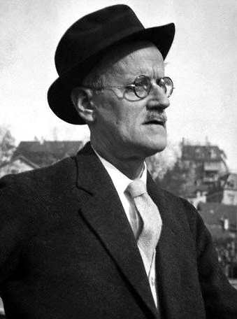

James Joyce
James Joyce, Irish novelist, noted for his experimental use of language in such works as Ulysses (1922) and Finnegans Wake (1939). Joyce's technical innovations in the art of the novel include an extensive use of interior monologue; he used a complex network of symbolic parallels drawn from the mythology, history, and literature, and created a unique language of invented words, puns, and allusions.